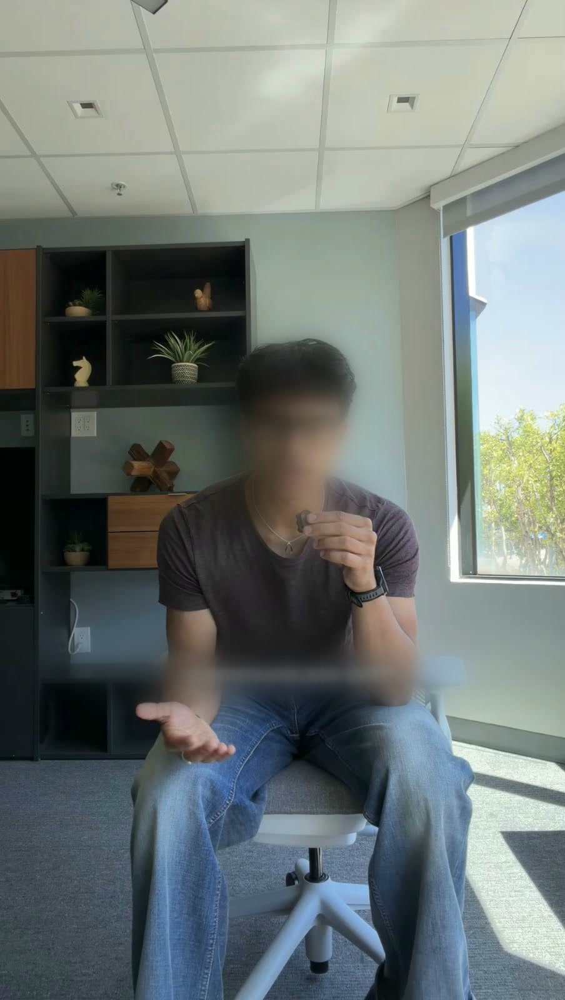
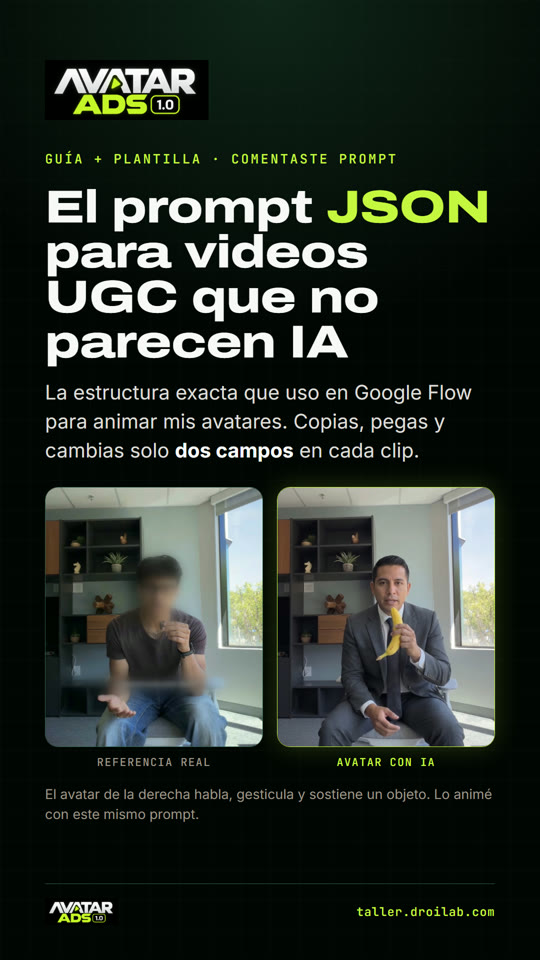

Y el método de 4 pasos para que no.
“Crea la foto de un hombre en una oficina con un traje…”
Personaje, luz y lugar: todo creado desde cero
Y el resultado…
Un UGC de referencia que te guste
El momento exacto que quieres
La escena no se toca
Con un prompt JSON estructurado

Pausa el video justo donde la pose y la luz se ven bien.
"camera": { "movement": "sin movimiento de cámara" }, "character": { "identity_consistency": "mantener exactamente el mismo avatar…" }, "dialogue": { "must_follow_exactly": true }
